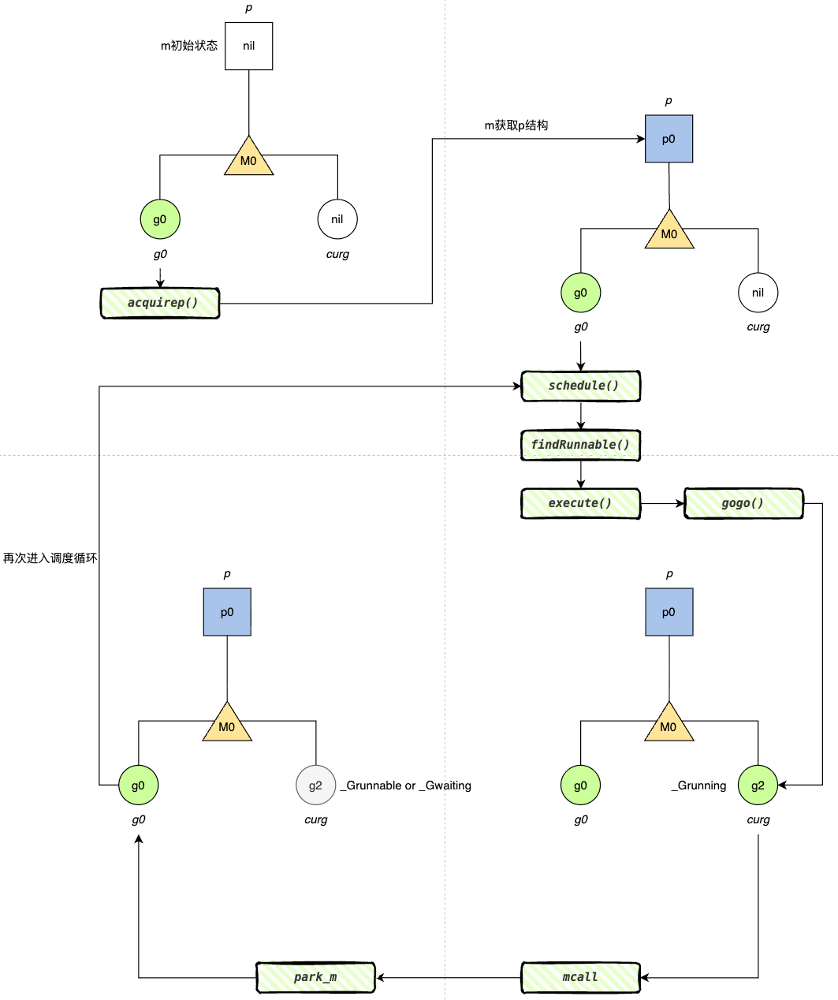
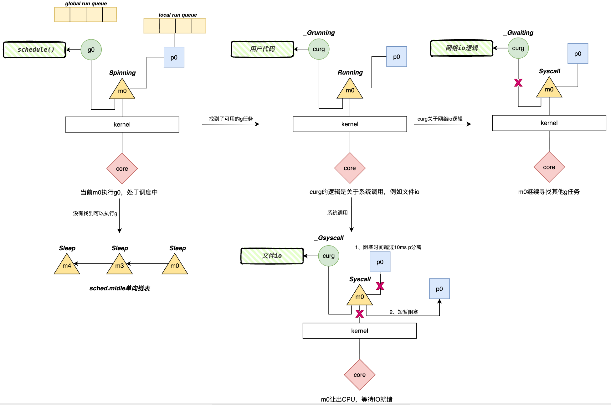

📄 本文共 1699 字，预计阅读 4 分钟
02. Machine(M)
Abstract
Keywords: Machine, 调度循环, g0栈, 线程自旋
1. 核心结构
m (Machine) 在 GMP 模型中代表操作系统线程 (OS Thread)。它是实际执行指令的物理实体。与 g (Goroutine) 不同，m 的生命周期通常很长，它负责不断地从队列中获取 g 并驱动其执行。
1.1 源码结构
下面的代码片段筛选了 m 结构中最核心的字段进行解析（完整代码见 runtime2.go m）：
type m struct {
g0 *g // 调度栈 Goroutine，用于执行 runtime 逻辑
curg *g // 当前正在执行的用户 Goroutine
// 绑定与上下文
p puintptr // 当前绑定的 P (执行 Go 代码必须持有)
nextp puintptr // 唤醒后预备绑定的 P
oldp puintptr // 系统调用前绑定的 P
// 线程与系统标识
procid uint64 // 操作系统内核的线程 ID (TID)
tls [tlsSlots]uintptr // 线程本地存储 (Thread Local Storage)，用于硬件绑定
// 状态标识
spinning bool // 是否处于自旋状态 (Work Stealing)
park note // 用于线程休眠/唤醒的信号量
locks int32 // 禁止抢占锁计数 (当 >0 时，禁止抢占和 GC)
// 信号处理
gsignal *g // 专门用于处理系统信号的 Goroutine
// ... 其他字段
}
g0
这是 m 结构中最关键的字段之一。
- 定义：每个 M 创建时都会启动第一个 Goroutine，称为
g0。 - 作用：
g0仅用于执行 Runtime调度逻辑（如schedule、newproc、gc、stack growth）。 - 区别：普通 G 的栈初始仅 2KB，而
g0使用的是系统栈，空间较大（通常 8MB），不存在栈溢出风险。M 的工作本质就是在执行用户代码（curg栈）和执行调度代码（g0栈）之间不断切换。
curg
当前正在该线程上运行的用户 Goroutine。
- 状态：当 M 在执行用户代码时，
curg指向具体的 G；当 M 切回g0进行调度时，curg为nil。
p, nextp, oldp (资源绑定)
这些字段维护了 M 与 P（Processor）的动态绑定关系，决定了 M 是否有资格执行 Go 代码。
- p: 当前持有的 P。如果不为 nil，说明 M 正在执行 Go 代码。
- nextp: 暂存的 P。当 M 从休眠中醒来，调度器可能会预先分配一个 P 给它，存储在此处，稍后通过
acquirep绑定。 - oldp: 系统调用前的 P。当 M 进入系统调用时，P 可能会被剥离；记录
oldp是为了在 Syscall 返回时优先尝试找回原来的 P，保持缓存亲和性 (Cache Locality)。
tls (Thread Local Storage)
硬件绑定核心。
- 这是一个数组，用于存储线程私有数据。
- 在 x86 架构下，内核会将 CPU 的 FS 段寄存器 指向这个数组的地址。
- Runtime 通过汇编指令直接读取 FS 寄存器，就能瞬间找到当前线程对应的
m结构体和g结构体，实现了 M 与操作系统线程的物理绑定。
spinning (自旋)
低延迟设计的体现。
- 当 M 没有找到本地任务时，它不会立即休眠（挂起线程），而是进入自旋状态。
- 处于
spinning的 M 会循环检查全局队列或尝试从其他 P 的队列中“窃取”任务（Work Stealing）。虽然这消耗 CPU，但避免了昂贵的线程上下文切换开销。
2. 核心机制：双栈切换与调度循环
与 g 只有单一的执行栈不同，m 的工作模式建立在双栈切换的基础上。这是 Go 调度器实现用户态调度的核心原理。
2.1 双栈模型
M 的一生都在重复以下循环：在 g0 栈上“找活”，切换到 curg 栈上“干活”，干完（或被阻塞）再切回 g0。M 的 g0 和 curg 切换的生命周期如下图所示：

图1: m 的双栈切换示意图
{kind=link}
信号处理
除了 g0 和 curg，M 还有一个 gsignal。
- 目的：当操作系统发送信号（如 SIGSEGV, SIGPROF）时，为了防止用户栈（curg）已经耗尽导致无法处理信号，Runtime 会强制切换到预分配的
gsignal栈上执行信号处理函数。这是系统稳定性的重要保障。
3. M 的生命周期与状态
不同于 g 有明确的 _Grunnable 等原子状态字段，m 的状态更多是由它正在做什么来定义的。下图说明了 M 在不同场景下的行为与状态：

图2: m 生命周期和状态示意（涵盖调度、运行、网络 I/O 及文件 I/O）
{kind=link}
关键状态说明
- 自旋 (Spinning) - [图2 左上]
- 为了降低系统调用的开销，当 M 绑定的 P 本地队列为空且全局 G 队列也为空的情况下，M 不会立即挂起线程，而是进入自旋状态。
- 行为：M 处于
_Running状态，消耗 CPU 进行runqsteal(工作窃取) 或检查netpoll。这是 M 获取任务的第一阶段。
- 执行 (Running) - [图2 右上/左中]
- M 找到了 G，并通过
gogo切换到用户栈执行业务代码。 - 特殊场景：网络 I/O (Network I/O)：
- 当
curg发起网络请求（如 TCP Read）时，M 不会阻塞。 - M 会将
curg挂载到 Netpoller（操作系统 Epoll/Kqueue），然后立即切回g0寻找下一个任务。
- 当
- M 找到了 G，并通过
- 系统调用 (Syscall) - [图2 右下]
- 当
curg执行文件 I/O 或 CGO 调用时，M 必须陷入内核，处于阻塞状态。此时 M 分为两种路径： - Slow Path：如果阻塞时间过长（>10ms），Sysmon 监控线程会将 P 从 M 身上剥离 (Handoff)，让 P 去服务其他 M。M 带着 G 独自等待内核返回。
- Fast Path：如果阻塞时间较短，M 从内核返回时，发现 P 还在（未被 Sysmon 抢走），则继续持有 P 并恢复执行。
- 当
- 休眠 (Sleep/Idle) - [图2 左下]
- 当自旋也找不到任务，或者系统处于低负载时，M 会自我休眠。
- 行为：M 释放 P，将自己加入全局空闲 M 列表 (
sched.midle)，并调用内核原语（如futex）挂起。 - 当有新任务（
newproc）或系统调用返回需要 P 时，调度器会从列表中唤醒一个 M。
4. 总结
m 结构体的设计体现了 Go 对操作系统线程的极致利用：
- 复用而非创建：M 的创建成本远高于 G。Go Runtime 总是尽可能复用休眠的 M，而不是销毁它。即便 M 在系统调用中被剥离了 P，它回来后也会尝试找 P 继续工作，找不到才休眠。
- 物理与逻辑的桥梁：
- 向上：通过
g0和curg的切换，支撑了 G 的调度。 - 向下：通过
tls和procid，实现了与 OS 硬件的锚定。
- 向上：通过
- 专用栈设计：
g0(调度) 和gsignal(信号) 的存在，保证了即使在用户栈溢出或极端情况下，Runtime 依然有能力接管控制权，保证了程序的健壮性。